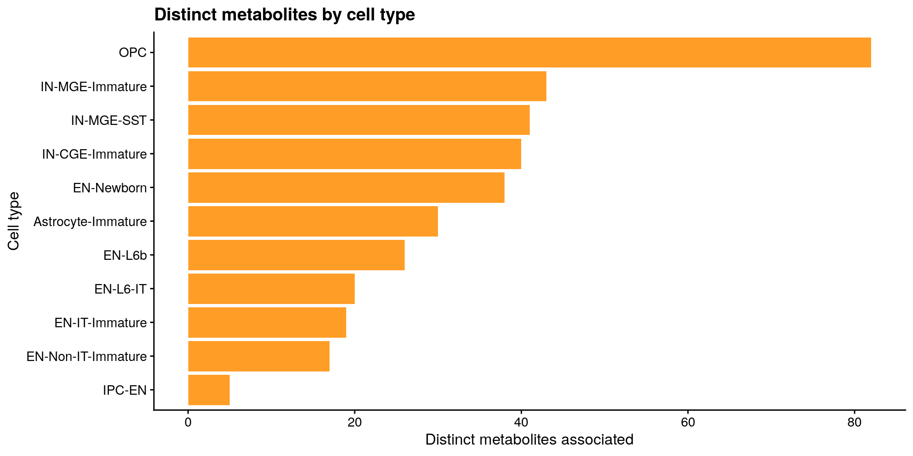
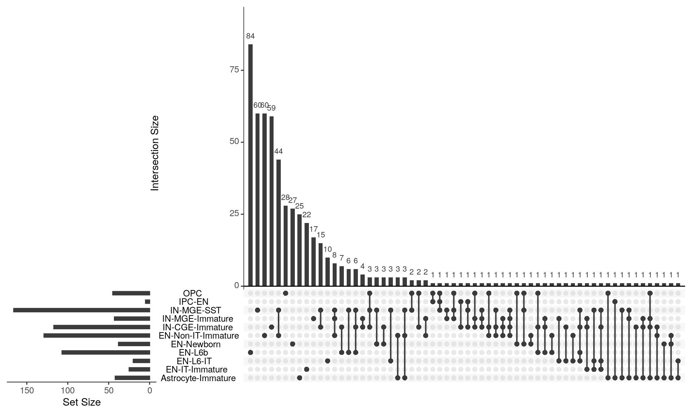
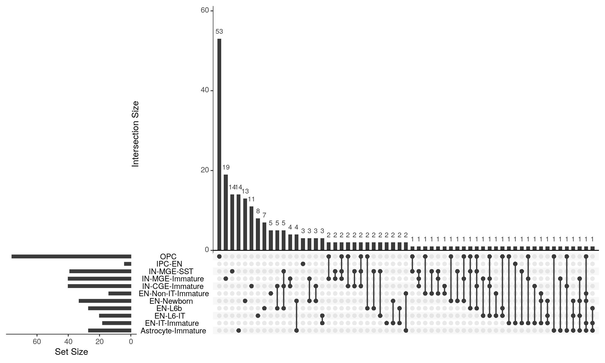
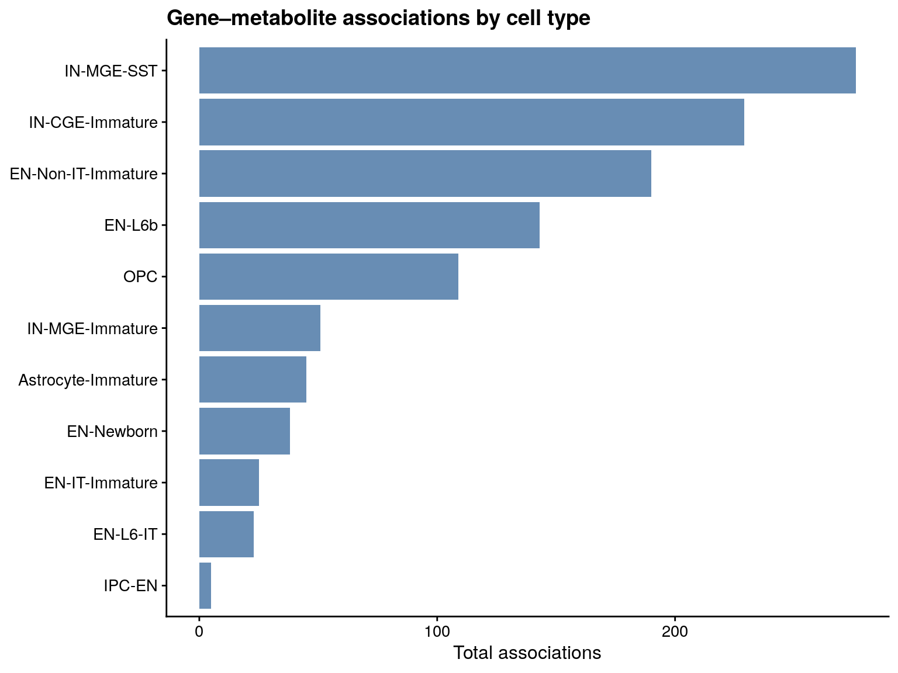
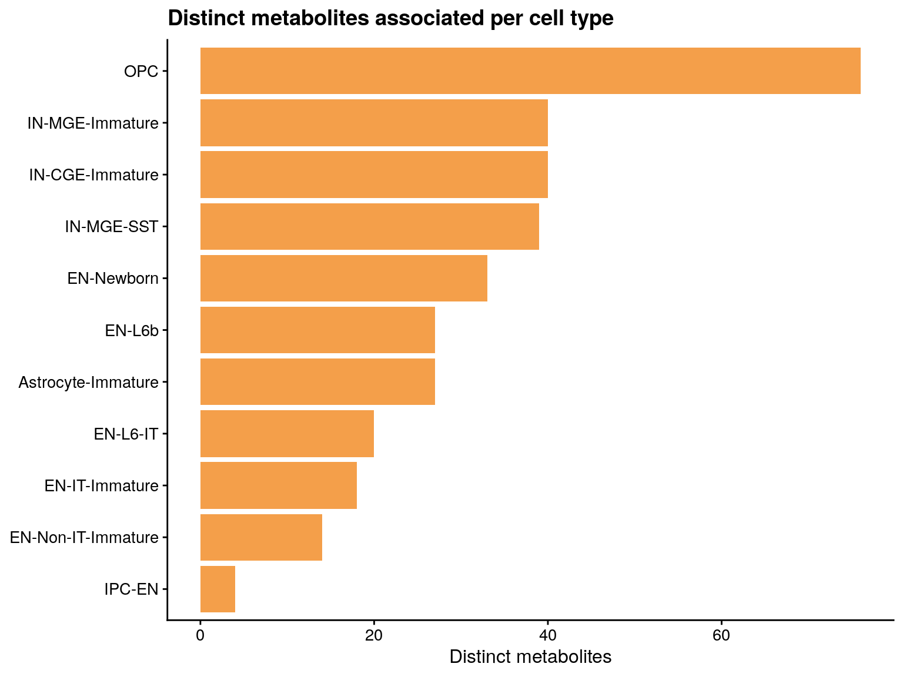
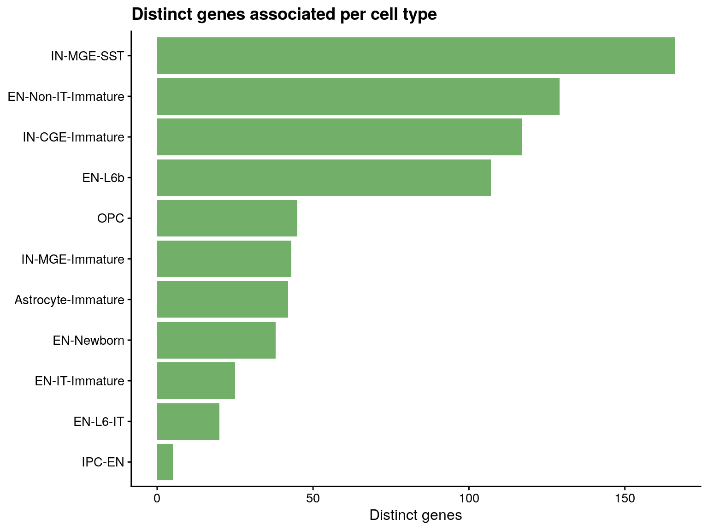

Reads the parquet archive written by metabolite_gene_limma.R and does all thresholding, global-FDR, annotation, and figures here — so screen changes never re-run the loop.
Model (per metabolite): gene counts ~ metab + GW + Sex + batch1_frac, split by cell type; voom.
Interpretation:logFC = Δ(gene log2-CPM) per 1 SD of the standardised metabolite. These are associations, not directional predictions.
source("pseudobulk_functions.R") # save_dual_format(), merge_hormone_metadata()source("metabolite_functions.R") # build_metab_covariates(), INT transform, mappingset.seed(123)
Code
# METHOD selects which transform run to analyze; it sets the parquet read below# AND the reporter's predictor transform, so they can never mismatch.METHOD <-"log2_na"suffix <-if (METHOD =="int") ""elsepaste0("-", METHOD)parquet_dir <-if (METHOD =="int") {"../../results/gene-metabolite/parquet"} else {sprintf("../../results/gene-metabolite/parquet-%s", METHOD)}# Rebuild the modeled objects (needed only for the LOO / Cook's reporter below).cache_dir <-"../../data/cache"metab_path <-"../../results/untargeted/batch2_peak_area_clean.csv"hormone_xlsx <-"../../doc/targeted/targeted_hormones.xlsx"pb_base <-readRDS(file.path(cache_dir, "pb_base.rds"))batch_props <-readRDS(file.path(cache_dir, "batch_props_sample.rds"))targeted_comparison_raw <- readxl::read_xlsx(hormone_xlsx)targeted_comparison_raw$E2 <- targeted_comparison_raw$`17B-E2 (ng/mL)`targeted_comparison_raw$TT <- targeted_comparison_raw$`TT (ng/mL)`targeted_comparison_raw$P4 <- targeted_comparison_raw$`P4 (ng/mL)`pb <-build_metab_covariates(pb_base, targeted_comparison_raw, batch_props,min_cells =30)metab_mat <-read_metabolite_matrix(metab_path)metab_tx <-transform_metabolite_matrix(metab_mat, method = METHOD)# Raw log2 (no imputation — panel 1 x-axis)metab_log <-log2(metab_mat +1)# Log2 with IQR outliers flagged NA (panels 2–3 x-axis).log2_trim_only <-function(x) { logged <-log2(x +1) orig_na <-is.na(logged) obs <- logged[!orig_na]if (length(obs) <2) return(rep(NA_real_, length(x))) qs <-quantile(obs, c(0.25, 0.75), names =FALSE) iqr <- qs[2] - qs[1] v <- logged v[!orig_na & (logged < qs[1] -0.75* iqr | logged > qs[2] +0.75* iqr)] <-NA v}metab_log_trim <-t(apply(metab_mat, 1, .log2_trim_only))dimnames(metab_log_trim) <-dimnames(metab_mat)rn <-rownames(pb$counts)row_ct <-sub("^[^.]+\\.(.*)$", "\\1", rn)metab_col <-metab_sample_to_pb(colnames(metab_tx), sub("^([^.]+)\\..*$", "\\1", rn))
Code
# parquet_dir + suffix come from the load-model-objects chunk (METHOD switch).annot_path <-"../../results/untargeted/batch2_metabolite_annotations_flagged.csv"out_dir <-"../../results/gene-metabolite"svg_dir <-file.path(out_dir, paste0("svg", suffix)) # method-keyed: no clobbercsv_dir <-file.path(out_dir, paste0("csv", suffix))for (d inc(out_dir, svg_dir, csv_dir)) dir.create(d, recursive =TRUE, showWarnings =FALSE)FDR_WITHIN <-0.10# primary screen (within metabolite x cell type)LFC_MIN <-0.25# per-SD effect-size floorFDR_GLOBAL <-0.10# reference global BH thresholdLABEL_CHARS <-30# metabolite-name clip length for plot labels# Clip long metabolite names for plotting only (data keeps full Name). Names# longer than `n` get an ellipsis; if two clips collide, the 2nd+ get "#2","#3"# so bars stay distinct. Returns the input tibble with a `label` column added;# write the paired label<->Name lookup beside each figure's SVG.add_plot_label <-function(df, name_col ="Name", n = LABEL_CHARS) { short <-ifelse(nchar(df[[name_col]]) > n,paste0(substr(df[[name_col]], 1, n), "\u2026"), df[[name_col]]) idx <- stats::ave(seq_along(short), short, FUN = seq_along) # 1,2,3 within group short[idx >1] <-paste0(short[idx >1], "#", idx[idx >1]) df$label <- short df}
Open the archive (lazy)
open_dataset() reads only the columns/rows a query touches, so the multi-GB archive is never loaded whole.
Total tests: 88,647,416 | metabolites: 513 | cell types: 11
Global BH (memory-light)
Any test with global FDR < 0.10 must have a small raw p-value, so we only pull candidates (P.Value < 0.05) and rank them against the full test count m. This reproduces the exact BH adjustment those rows would receive over all n_tests without collecting the whole archive.
# Reviewer/co-author question: how many associations survive a stricter global# FDR? Reported only -- `hits` and everything downstream stay at FDR_GLOBAL.# |logFC| is held at LFC_MIN so FDR is the only variable that moves. The# candidate prefilter (p < 0.05) is a superset of any FDR < 0.10 cut, so# tightening the threshold needs no rerun.for (f inc(0.05, 0.01)) { h <- candidates |>filter(FDR_global < f, abs(logFC) >= LFC_MIN)cat(sprintf(" FDR < %.2f: %s associations | %s metabolites | %s genes | %s cell types\n", f,format(nrow(h), big.mark =","),format(dplyr::n_distinct(h$Compound.ID), big.mark =","),format(dplyr::n_distinct(h$gene), big.mark =","), dplyr::n_distinct(h$cell_type)))}
# Per hit, REPORTER columns (do not gate significance -- filter on them later):# n_nonzero modeled samples with raw count >= 2# max_cooks max Cook's distance in the lm(log1p(CPM) ~ metab + covariates)# loo_unstable dropping the most influential sample flips the metabolite slope or halves |slope| -> small-n fragility report_group <-function(cid, ct, genes) { idx <-which(row_ct == ct) mv <- metab_tx[cid, match(metab_col[idx], colnames(metab_tx))] keep <-!is.na(mv) rows_use <- idx[keep] md <- pb$metadata[rn[rows_use], ] lib <-rowSums(pb$counts[rows_use, , drop =FALSE]) # library size / sample base <-tibble(metab =as.numeric(mv[keep]),GW = md$GW, Sex = md$Sex, batch1_frac = md$batch1_frac) covs <-c("GW", "Sex", "batch1_frac") keepc <- covs[vapply(covs, function(cv) length(unique(base[[cv]])) >=2, logical(1))] fml <-reformulate(c("metab", keepc), response ="expr") purrr::map_dfr(genes, function(g) {if (!g %in%colnames(pb$counts))return(tibble(gene = g, n_nonzero =NA_integer_,max_cooks =NA_real_, loo_unstable =NA)) cnt <- pb$counts[rows_use, g] df <- base; df$expr <-log1p(cnt / lib *1e6) # log1p(CPM)if (length(unique(df$metab)) <2||nrow(df) <4)return(tibble(gene = g, n_nonzero =sum(cnt >=2),max_cooks =NA_real_, loo_unstable =NA)) fit <-lm(fml, data = df) cd <-cooks.distance(fit); b <-coef(fit)[["metab"]] b2 <-coef(lm(fml, data = df[-which.max(cd), ]))[["metab"]]tibble(gene = g, n_nonzero =sum(cnt >=2), max_cooks =max(cd),loo_unstable =sign(b2) !=sign(b) ||abs(b2) <0.5*abs(b)) })}reporter <- hits |>group_by(Compound.ID, cell_type) |>group_modify(~report_group(.y$Compound.ID, .y$cell_type, .x$gene)) |>ungroup()hits <- hits |>left_join(reporter, by =c("Compound.ID", "cell_type", "gene"))write_csv(hits, file.path(csv_dir, "metabolite_gene_hits.csv"))cat(sprintf("Reporter added. loo_unstable: %s of %s hits (%.1f%%) flagged fragile.\n",format(sum(hits$loo_unstable, na.rm =TRUE), big.mark =","),format(nrow(hits), big.mark =","),100*mean(hits$loo_unstable, na.rm =TRUE)))
Reporter added. loo_unstable: 182 of 1,134 hits (16.0%) flagged fragile.
Recurrence — genes across metabolites
Genes that track the most distinct metabolites (a gene appearing broadly may be a hub of metabolic coupling, or a covariate-driven artifact worth inspecting).
knitr::kable(ct_recur, caption ="Hit counts per cell type")
Hit counts per cell type
cell_type
n_associations
n_metabolites
n_genes
IN-MGE-SST
276
39
166
IN-CGE-Immature
229
40
117
EN-Non-IT-Immature
190
14
129
EN-L6b
143
27
107
OPC
109
76
45
IN-MGE-Immature
51
40
43
Astrocyte-Immature
45
27
42
EN-Newborn
38
33
38
EN-IT-Immature
25
18
25
EN-L6-IT
23
20
20
IPC-EN
5
4
5

Sharing across cell types (UpSet)
Which findings are shared vs. cell-type-specific. Three panels, because the answer differs by unit: genes (does a gene associate with any metabolite in more than one cell type), associations (does the same gene-metabolite pair recur across cell types — the strictest test), and metabolites (does a metabolite associate with any gene in more than one cell type).
Code
# UpSetR >= 1.4.0: upset() RETURNS an object of class `upset`; all drawing lives# in print.upset(). So it cannot be passed to ggsave()/save_dual_format(), and it# must be print()-ed explicitly — inside eval() there is no auto-printing, which# silently yields a blank file. `expr` is passed unevaluated and forced (and# printed) once per device.save_dual_format_base <-function(expr, output_dir, filename_base,width =10, height =6, dpi =300) { expr <-substitute(expr) penv <-parent.frame() svg_out <-file.path(output_dir, "svg")dir.create(svg_out, recursive =TRUE, showWarnings =FALSE)png(file.path(output_dir, paste0(filename_base, ".png")),width = width, height = height, units ="in", res = dpi)print(eval(expr, envir = penv)); dev.off() # print() is load-bearing svglite::svglite(file.path(svg_out, paste0(filename_base, ".svg")),width = width, height = height)print(eval(expr, envir = penv)); dev.off()message("Saved: ", filename_base, ".png + svg/", filename_base, ".svg")}# One UpSet per unit of analysis. `id_cols` defines the element being counted;# cell types are always the sets. Set sizes (left bars) = distinct elements per# cell type, so the three panels are NOT rescalings of each other.upset_by_celltype <-function(df, id_cols, filename_base, label) { wide <- df |>distinct(dplyr::across(dplyr::all_of(c(id_cols, "cell_type")))) |> tidyr::unite("element", dplyr::all_of(id_cols), sep =" ~ ", remove =TRUE) |>mutate(present = 1L) |>pivot_wider(names_from = cell_type, values_from = present, values_fill = 0L) ct_cols <-setdiff(colnames(wide), "element") n_shared <-sum(rowSums(wide[, ct_cols, drop =FALSE]) >1)cat(sprintf("%s: %s total, %s in >1 cell type (%.1f%%)\n", label, format(nrow(wide), big.mark =","),format(n_shared, big.mark =","),100* n_shared /max(nrow(wide), 1)))if (length(ct_cols) <2||nrow(wide) ==0) {cat(" Not enough cell types / elements for an UpSet plot.\n")return(invisible(NULL)) } upset_call <-quote( UpSetR::upset(as.data.frame(wide), sets = ct_cols,nsets =length(ct_cols), nintersects =NA, # keep all non-empty intersectionsorder.by ="freq", keep.order =TRUE,text.scale =1.3 ) )save_dual_format_base(eval(upset_call), out_dir, filename_base,width =10, height =6)print(eval(upset_call)) # render inline in the rendered documentinvisible(wide)}upset_by_celltype(hits, "gene","upset_genes_by_celltype", "Genes")
Genes: 542 total, 150 in >1 cell type (27.7%)

Code
upset_by_celltype(hits, c("gene", "Compound.ID"),"upset_associations_by_celltype", "Associations (gene x metabolite)")
Associations (gene x metabolite): 1,121 total, 13 in >1 cell type (1.2%)
Metabolites: 229 total, 80 in >1 cell type (34.9%)

Association sharing across neuronal lineages
Cell-type-level results are sparse by construction, so a gene-metabolite pair recurring in two related cell types (e.g. IN-MGE-Immature and IN-MGE-SST) is more informative than one appearing in a single type. Here we ask two things: whether pairs recur within a lineage, and whether any pair is shared between excitatory neurons, inhibitory neurons, and glia. Sharing is evaluated on the gene x metabolite pair, which is stricter than the gene-level UpSet above.
Code
# Lineage assignment. EN-*/IN-* are resolved by prefix (covers EN-Newborn,# IN-Mix-LAMP5, IN-dLGE-Immature etc.); everything else is mapped explicitly# below. Only cell types present in `hits` are used, so entries for types that# fail filtering are simply inert.# - Progenitors (RG-*, IPC-*) are kept separate from mature glia: they are# neurogenic, and folding them in would blur an "excitatory vs glia" claim.# IPC-EN is an excitatory-neuron progenitor, but it is still a progenitor —# move it to "Excitatory" only if the claim is about lineage, not state.# - Microglia is grouped with Glia by convention, though it is myeloid-derived# rather than neuroectodermal. Split it out if a reviewer objects.# - Cajal-Retzius cells are glutamatergic but arise from the cortical hem, so# they are held separate rather than counted as excitatory.# - "Unknown" is its own category so it can never silently prop up a# cross-lineage overlap claim.NONNEURONAL_MAP <-c("Astrocyte-Immature"="Glia","Astrocyte-Fibrous"="Glia","Oligodendrocyte-Immature"="Glia","OPC"="Glia","Microglia"="Glia","RG-oRG"="Progenitor","RG-tRG"="Progenitor","RG-vRG"="Progenitor","IPC-EN"="Progenitor","IPC-Glia"="Progenitor","Cajal-Retzius cell"="Cajal-Retzius","Vascular"="Other","Unknown"="Unknown")assign_lineage <-function(ct) { out <- dplyr::case_when(grepl("^EN", ct) ~"Excitatory",grepl("^IN", ct) ~"Inhibitory",TRUE~unname(NONNEURONAL_MAP[ct]) ) out[is.na(out)] <-"Unmapped" out}hits_lin <- hits |>mutate(lineage =assign_lineage(cell_type))# Surface anything the map missed so the grouping is never silently wrong.unmapped <- hits_lin |>filter(lineage =="Unmapped") |>distinct(cell_type) |>pull()if (length(unmapped)) {warning("Unmapped cell types (add to NONNEURONAL_MAP): ",paste(unmapped, collapse =", "))}cat("Cell types per lineage:\n")
Cell types per lineage:
Code
print(hits_lin |>distinct(lineage, cell_type) |>count(lineage, name ="n_cell_types"))
# ---- Within-lineage recurrence: same pair in >1 cell type of the same lineagepair_within <- hits_lin |>distinct(lineage, Compound.ID, gene, cell_type) |>count(lineage, Compound.ID, gene, name ="n_cell_types")cat("\nGene-metabolite pairs recurring in >1 cell type of the same lineage:\n")
Gene-metabolite pairs recurring in >1 cell type of the same lineage:
Code
print(pair_within |>filter(n_cell_types >1) |>count(lineage, name ="n_pairs"))
# ---- Gene-level sharing between lineages, for comparison with the UpSet abovegene_between <- hits_lin |>distinct(gene, lineage) |>count(gene, name ="n_lineages")cat(sprintf("\nGenes appearing in >1 lineage: %s of %s hit genes\n",format(sum(gene_between$n_lineages >1), big.mark =","),format(nrow(gene_between), big.mark =",")))
Genes appearing in >1 lineage: 125 of 542 hit genes
Code
write_csv(within_tbl, file.path(csv_dir, "lineage_pairs_within.csv"))write_csv(between_tbl, file.path(csv_dir, "lineage_pairs_between.csv"))cat("\nWrote lineage_pairs_within.csv and lineage_pairs_between.csv\n")
Wrote lineage_pairs_within.csv and lineage_pairs_between.csv
Recurrence tables written to ../../results/gene-metabolite/csv-log2_na
Top-20 global-FDR scatters
Five-panel scatter: raw log2 (all samples) | outlier-trimmed log2 | covariate-adjusted log2 || outlier-trimmed z-score | covariate-adjusted z-score. Log2 panels use free x-axis per metabolite; z-score panels share a fixed axis across all plots for cross-metabolite comparison. One pooled regression line per panel; points colored by GW and shaped by Sex.
Saved 20 global-FDR scatters to ../../results/gene-metabolite/csv-log2_na/scatter-plots
Total associations by cell type
Code
p_assoc <-ggplot(ct_recur,aes(x =reorder(cell_type, n_associations), y = n_associations)) +geom_col(fill ="#4E79A7", alpha =0.85) +coord_flip() +labs(x =NULL, y ="Total associations",title ="Gene\u2013metabolite associations by cell type") +theme_cowplot(12)save_dual_format(p_assoc, out_dir, "associations_by_celltype", width =8, height =6)print(p_assoc)

Distinct metabolites by cell type
Code
p_ct_metab <-ggplot(ct_recur,aes(x =reorder(cell_type, n_metabolites), y = n_metabolites)) +geom_col(fill ="#F28E2B", alpha =0.85) +coord_flip() +labs(x =NULL, y ="Distinct metabolites",title ="Distinct metabolites associated per cell type") +theme_cowplot(12)save_dual_format(p_ct_metab, out_dir, "distinct_metabolites_by_celltype", width =8, height =6)print(p_ct_metab)

Distinct genes by cell type
Code
p_ct_genes <-ggplot(ct_recur,aes(x =reorder(cell_type, n_genes), y = n_genes)) +geom_col(fill ="#59A14F", alpha =0.85) +coord_flip() +labs(x =NULL, y ="Distinct genes",title ="Distinct genes associated per cell type") +theme_cowplot(12)save_dual_format(p_ct_genes, out_dir, "distinct_genes_by_celltype", width =8, height =6)print(p_ct_genes)

Spotlight scatter — helper function
Simple 1-panel scatter showing the covariate-adjusted partial residual (the actual model relationship: gene ~ metabolite after adjusting for GW + Sex + batch1_frac). Points colored by GW, shaped by Sex. One pooled regression line matching model structure.
OPC has the most distinct metabolites (n = 76), with lipids representing the largest metabolite class. Spotlight pairs connect myelination-associated genes to lipid metabolites.